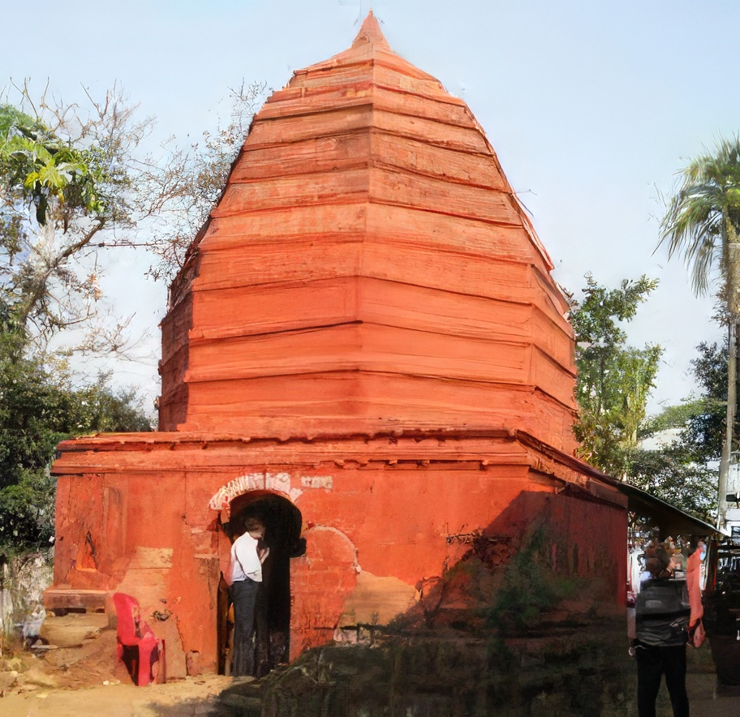

Guwahati or Gauhati, the gateway to the Northeast is situated on the bank of the river Brahmaputra and is one of the main tourist hubs in the entire Northeast India.
Your travel to the northeast will be incomplete without your visit to Guwahati.
The city boasts of a 10th century old Kamakhya temple at the hilltop of Nilachal hills, beautiful Umananda Temple situated at the Peacock Island of the Brahmaputra River, the mighty river Brahmaputra which is one of the largest rivers in the world.
Hence the city is aesthetically, commercially and culturally developed.
Tourism in Guwahati includes heritage sites, ancient temples, museums, historical monuments, sanctuaries, archeological sites, lakes and ponds.
The major tourist attractions in Guwahati city includes:
Hotels and Restaurants in Guwahati:
Tourists in Guwahati can relish authentic cuisines in some of the finest A1 hotels and restaurants in Guwahati which includes Hotel Grand Starline, Hotel Brahmaputra Ashok, Hotel Pragati Manor, Hotel Gateway Grandeur, Hotel Nakshatra, Hotel Kiranshree Portico, Hotel Nandan, Hotel Dynasty, Hotel Raj Mahal, Hotel Agnideep Continental, Hotel Bellevue, Hotel Vishwaratna, Hotel Prag Continental and so on. Given below are the addresses of some of the good hotels in Guwahati-
Vishwaratna Hotel Pvt ltd. Omkar Plaza, A T Road, Guwahati Gpo
Guwahati - 781001 Phone: (0361) 2607712, 9707700007
Hotel Tibet Sarhad Complex, Opposite Astc Multi Level Car Parking
G S Road, Paltanbazar, Guwahati - 781008 Phone: (0361) 2519815, 9435043966
Hotel Brahmaputra Residency Peace Enclave,8th Floor, News Time Building
G S Road, Ulubari, Guwahati - 781006 Phone: (0361) 2738446, 9435306614
Hotel Blue Moon Bhuban Road, Uzan Bazar, Guwahati - 781001
Phone: (0361) 2631292
Hotel Gateway Grandeur Near Old Postoffice, Cristian Basti, G S Road Guwahati - 781005
Phone: (0361) 7110022
Guwahati is also home to some famous international chains like Mainland China, Mandarin Court, Yo China! and lots more.